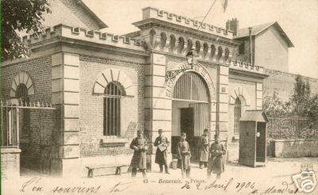
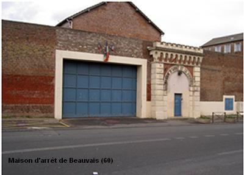
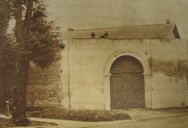
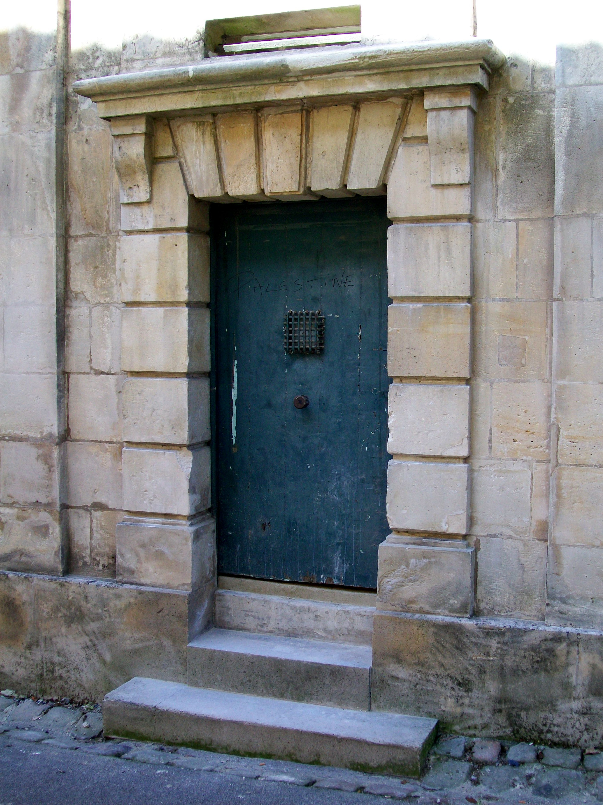

| Département | Images | Ville | Nom | Adresse | Période | Capacité | Histoire du lieu | Nombre d'exécutions |
| Oise (60) |   |
Beauvais | Maison d'arrêt, de justice et de correction | 2, rue Bossuet | 1858-2015 | 60 places, 16 surveillants (1962) | Les anciennes prisons de l'Evêché au XVIIIe siècle, hospice de 1813 à 1819, sont à nouveau consacrées à l'incarcération des détenus à compter de 1858. Assez vaste, la prison de Beauvais aura une vie moyennement "calme". On mentionnera le fait qu'elle fût détruite partiellement par les bombardements en 1940, et qu'il fallut attendre 1974 pour que des travaux soient efffectués pour combattre les effets du délabrement et répondre enfin aux normes d'hygiène en vigueur. En 1999, la prison est aussi évoquée au rayon faits divers quand les agissements scandaleux de son directeur et de ses hommes de main, tenant par la terreur tant les détenus que les surveillants, sont révélés au grand public. Elle est désaffectée le 13 décembre 2015, et ses 119 occupants transférés dans un nouveau centre pénitentiaire d'une capacité de 615 places. Ces derniers célèbrent leur départ en saccageant l'ancienne prison, détruisant WC, tuyaux ou literie... Désormais, la ville songe à une vente rapide sans avoir de projet bien fixé : résidence étudiante ou pour personnes âgées, commerces et parkings pour désengorger le centre-ville... | Six exécutions en 1921, 1925, 1930, 1944 et 1950. |
| Oise (60) | Clermont-de-l'Oise | Maison d'arrêt et de correction | 10, rue du Châtellier | -1926 | Faisait face au palais de justice. Démolie dans les années 1960. | Aucune exécution | ||
| Oise (60) |  |
Compiègne | Maison d'arrêt et de correction | 3, avenue de la Résistance | 1867-2015 | 46 places, 15 surveillants (1962) | Construite en 1867 sur un terrain de 4000 m², les 25 cellules et 22 dortoirs de la maison d'arrêt de Compiègne devaient permettre l'accueil de 76 détenus - l'occupation maximale sera de 130 prisonniers, plus 28 surveillants. Entre autres choses, dans les ateliers, on fabriquait les filets destinés à l'élevage des moules de Bouchot. Elle fut vendue à l'État le 22 mars 1946 en même temps que Beauvais et Senlis. Sa fin est décidée par Michèle Alliot-Marie, Garde des Sceaux, en 2010. Les 47 derniers occupants quittent la prison le 13 décembre 2015, et la maison d'arrêt peu à peu démantelée en vue soit d'une réhabilitation en tant qu'immeuble, ou bien une démolition. | Aucune exécution |
| Oise (60) |  |
Senlis | Maison d'arrêt de la Force | Rue de la Poterne | 1844-1943 | L'ancien hôpital de la Charité, construit en 1688 par l'abbé Jolly pour les soins aux pauvres et aux malades incurables, agrandi en 1752, voit, en 1838, ses bâtiments répartis entre la sous-préfecture et le palais de justice (détruit dans un incendie le 02 septembre 1914 et jamais reconstruit depuis). Le bâtiment dit de la Force - l'aile psychiatrique - est voué à la prison ; ses cellules jadis consacrées aux fous dangereux sont transformées en cellules de prison. C'est en 1843 que des travaux mettent les lieux conformes à leur nouvelle destination, en murant des fenêtres trop vastes, en ouvrant une chapelle, un logement pour le gardien-chef, des cachots au sous-sol, et une muraille de 5 mètres de haut pour encercler le tout... Les bâtiments accueillent maintenant l'annexe locale des archives départementales de l'Oise, et la sous-préfecture devint une école dans les années 60. Classé monument historique depuis 1942, les cellules existent encore. | Aucune exécution |
{kind=link}
{kind=link}
{kind=link}
{kind=link}
{kind=link}